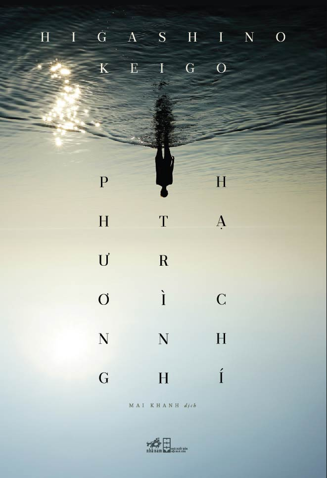

REVIEW SÁCH
Phương trình hạ chí
Nhận xét của mình
Mình không thấy cuốn này hot lắm vì chưa thấy ai nhắc tới cuốn này, mình vô tình thấy chỉ còn cuốn này của ông Keigo ở 1 tiệm sách cũ và quyết định mua về. Như đã nói thì những tác phẩm của Keigo không đơn thuần là trinh thám mà còn sâu sắc cảm xúc con người. Mở đầu câu chuyện là sự gặp gỡ vô tình của một nhà vật lý Yukawa và cậu bé lớp 5 Kyohei, sau đó họ cùng đến ở một nhà trọ tại Harigaura - một thị trấn bên một bờ biển xinh đẹp. Nhưng không may nhà vật lý bị cuốn vào một án mạng làm giả tự sát mà nạn nhân chính là khách thuê ở nhà trọ ấy. Từ một vụ án mạng ở thị trấn Harigaura này mà lại xuất hiện liên kết về quá khứ ở Tokyo. Cuộc điều tra dần sáng tỏ từ những chi tiết nhỏ nhặt. Cuốn sách làm cho mình kinh ngạc khá nhiều, vì những liên kết sâu xa ở trong câu chuyện. Cái kết lắng đọng nhiều cảm xúc dâng trào, mình thấy nó khá hay khi nói về tình cảm gia đình và tình thân cũng như sự nhân văn ở nhân vật.